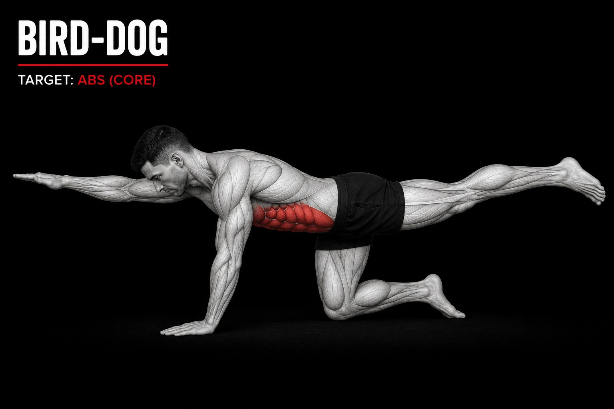

Exercises 1/10
Lying leg rise

sets:3 sets
reps:10-12 reps
rest time:40sec
Est time:5-10min
Instruction
- Lie flat on your back on a mat with your legs straight and your arms beside you.
- Keep your lower back pressed gently against the floor and tighten your core.
- Pause briefly at the top, then slowly lower your legs without letting them drop.
- Repeat with controlled movement and avoid swinging your legs or lifting your lower back off the floor.
Exercises 2/10
Forearm Plank

sets:3 sets
reps:10-12 reps
rest time:40sec
Est time:5-10min
Instruction
- Start on your forearms and toes, keeping your elbows directly under your shoulders.
- Keep your body in a straight line from your head to your heels
- Tighten your core and keep your hips level with your body.
- Look down toward the floor and keep your neck relaxed.
- Hold the position steadily while breathing normally. Avoid letting your hips drop or rise too high.
Exercises 3/10
Dead Bug

sets:3 sets
reps:10-12 reps
rest time:40sec
Est time:5-10min
Instruction
- Lie flat on your back with your legs straight and your arms beside you.
- Keep your core tight and press your lower back gently toward the floor.
- Lift both legs slightly off the ground while keeping them straight.
- Alternate your legs up and down in small, controlled movements.
- Keep your movements steady and avoid lifting your legs too high or arching your back.
Exercises 4/10
Flutter Kicks

sets:3 sets
reps:10-12 reps
rest time:40sec
Est time:5-10min
Instruction
- Lie on your back with your arms straight up toward the ceiling and your knees bent at 90°.
- Keep your lower back gently pressed against the floor and tighten your core.
- Slowly extend your right arm and left leg toward the floor without letting your back arch.
- Return to the starting position, then repeat with your left arm and right leg.
- Perform the movement slowly and with control, keeping your core engaged throughout.
Exercises 5/10
Bird-Dog

sets:3 sets
reps:10-12 reps
rest time:40sec
Est time:5-10min
Instruction
- Start on all fours with your hands under your shoulders and knees under your hips.
- Keep your back straight and tighten your core.
- Slowly extend your right arm and left leg until they are roughly in line with your body.
- Hold the position briefly, keeping your hips and shoulders steady.
- Return to the starting position and repeat with your left arm and right leg.
Exercises 6/10
Side Plank

sets:3 sets
reps:10-12 reps
rest time:40sec
Est time:5-10min
Instruction
- Lie on your side with your elbow directly under your shoulder and your legs straight.
- Lift your hips off the floor and keep your body in a straight line.
- Tighten your core and keep your head, neck, and spine aligned.
- Hold the position steadily, then lower your hips with control and switch sides.
- Keep your hips lifted and avoid letting them rotate forward or backward while holding the position.
Exercises 7/10
Scissor Kicks

sets:3 sets
reps:10-12 reps
rest time:40sec
Est time:5-10min
Instruction
- Lie flat on your back with your legs straight and your arms beside you.
- Lift both legs slightly off the floor and keep them straight.
- Tighten your core and keep your lower back gently pressed against the floor.
- Cross your legs over each other in a controlled, alternating motion.
- Keep the movement steady and controlled without swinging your legs too quickly.
Exercises 8/10
Bear Crawl Hold

sets:3 sets
reps:10-12 reps
rest time:40sec
Est time:5-10min
Instruction
- Start on all fours with your hands under your shoulders and knees under your hips.
- Lift your knees slightly off the floor while keeping your back straight.
- Tighten your core and keep your shoulders stable.
- Hold the position while keeping your knees close to the floor.
- Breathe steadily and maintain the position without raising your hips too high.
Exercises 9/10
High-to-Low Plank

sets:3 sets
reps:10-12 reps
rest time:40sec
Est time:5-10min
Instruction
- Start in a high plank position with your hands directly under your shoulders.
- Keep your body straight from your head to your heels and tighten your core.
- Lower one forearm to the floor, followed by the other, moving into a forearm plank.
- Push back up onto one hand at a time until you return to the high plank position.
- Continue alternating the leading arm while keeping your hips as steady as possible.
Exercises 10/10
Seated Russian Twist

sets:3 sets
reps:10-12 reps
rest time:40sec
Est time:5-10min
Instruction
- Sit on the floor with your knees bent and feet flat on the ground.
- Lean your upper body back slightly while keeping your back straight.
- Keep your hands together in front of your chest.
- Rotate your torso slowly to the left and right, moving your hands toward each side.
- Keep your movements controlled and engage your core throughout the exercise.